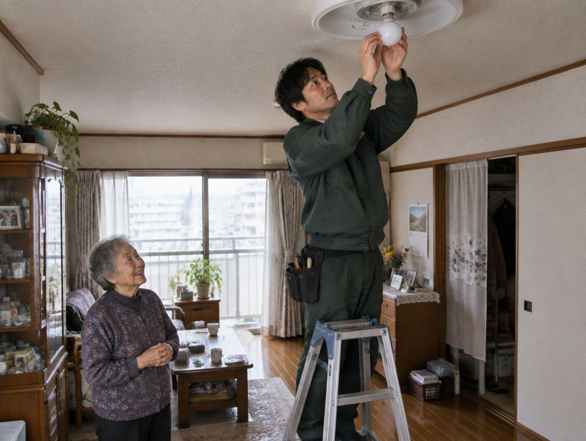
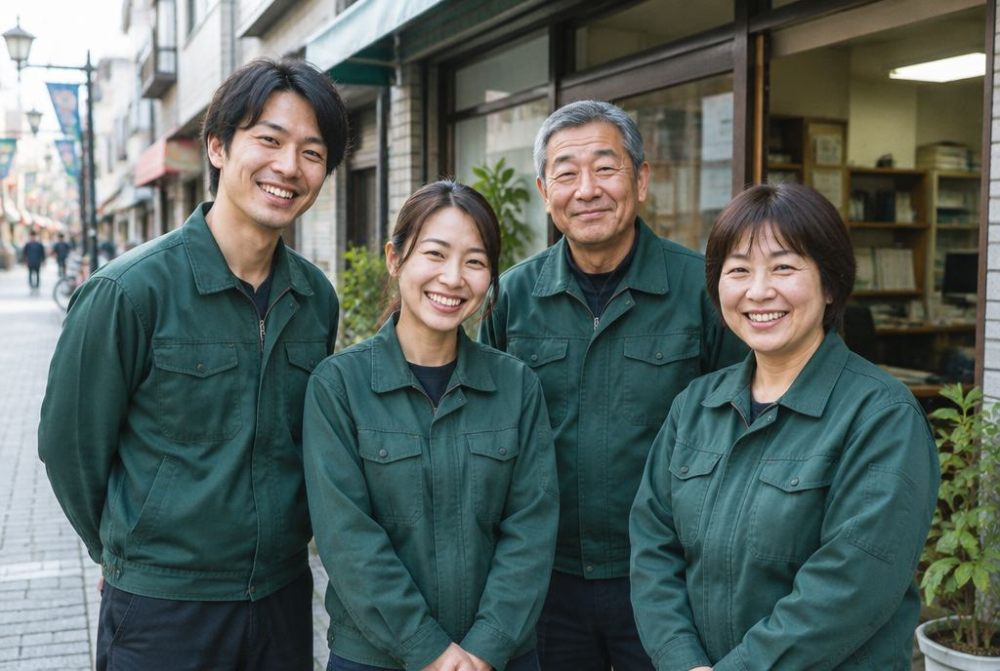

練馬区・30代の女性2026年9月
本棚の組み立て（女性スタッフを指名）
女性の方に来てもらえて、ひとり暮らしでも安心でした。
電球1個から、町の便利屋がおうちにうかがいます。
こんなこと、ありませんか？
どこに頼めばいい？
脚立から落ちたり、腰を痛めたりする心配があります。
忙しそうで頼みにくく、何度もお願いするのは気が引けます。
小さな作業は断られることも。作業ごとに別の業者を探す手間があります。
小さなことも、いくつかの用事も、1回の電話でまとめて頼めます。
「誰に頼めばいいか分からない」
ときこそ、便利屋です。
町の便利屋が選ばれる理由
便利屋選びで不安になりやすいところを、ひとつずつなくしました。
| よくある便利屋 | 町の便利屋 | |
|---|---|---|
| 料金表示 | 「〜円から」。出張費・車両費は別 | 出張費こみの合計で表示 |
| 追加料金 | 作業のあとに増えることも | 先にお伝えした金額から増えません |
| 見積もり | 口頭のことが多い | 書面でお渡し（LINEでも可） |
| 支払い | 前払いが多い | 作業が終わってから |
| スタッフ | 選べないことが多い | 女性・男性を選べます |
| 作業後 | 口頭で終わり | 写真つきの報告書をお渡し |
※「よくある便利屋」は、東京で営業する便利屋の公式サイトの表示（2026年10月時点）をもとにした一般的な例です。特定の会社を指すものではありません。
ご依頼の例
料金はすべて出張費こみの合計です。
女性の方に来てもらえて、ひとり暮らしでも安心でした。

脚立に乗るのが怖くて。電話したら翌日すぐ来てくれました。
遠くに住んでいて行けないので、LINEで頼めて助かりました。
同じようなことで困っていませんか？
安心の取り組み

料金
作業の前に合計金額をお伝えします。作業のあとで料金が増えることはありません。
| 電球・照明の交換20分ほど・1人 | 5,500円 |
|---|---|
| 家具の組み立て1時間30分ほど・1人 | 7,150円 |
| 病院への付き添い2時間ほど・1人 | 8,800円 |
| 庭の草むしり2時間ほど・1人 | 8,800円 |
| タンスなど重い家具の移動1時間ほど・2人 | 11,000円 |
| 車を使う作業運び出しなど | ＋3,300円 |
| 作業日の3日前まで | 無料 |
|---|---|
| 2日前 | 料金の30％ |
| 前日 | 料金の50％ |
| 当日 | 料金の100％ |
お支払い方法（作業が終わってから）
※金額・キャンセル料は仮のものです。駐車場がない場合のコインパーキング代は当社が負担します。
あなたの場合の金額を
無料でお伝えします
お客様の声
電話に出た方がとても丁寧で、スマホが苦手な私でも簡単に頼めました。
江東区・80代の女性
実家の片付けをお願いしました。LINEで写真を送ってくれて、離れていても様子がわかりました。
品川区・50代の女性
見積もりを紙でもらえて、その金額のままだったので安心しました。
足立区・60代の男性
ご利用の流れ
困っていることを、そのままお話しください。スタッフの希望（女性・男性）もこのときに。
出張費こみの合計金額を、紙またはLINEでお渡しします。納得していただけたら予約です。
作業の前に、内容と金額をもう一度ご確認いただきます。
終わったことを確かめてから、お支払いください。写真つきの報告書をお渡しします。
よくある質問
はい。ご相談のときに「女性スタッフで」とお伝えください。男性スタッフの指名もできます。
もちろんです。電球1個、ビンのふた1つからでも大丈夫です。
はい。お見積もりだけなら料金はかかりません。無理にご契約をすすめることもありません。
損害賠償保険に加入していますので、当社の責任で壊れたものは補償します。
空きがあれば、その日のうちにうかがいます。まずはお電話ください。
ゴミの回収と処分には市区町村の許可が必要なため、当社では行いません。集積所へのゴミ出しのお手伝いや、許可を持つ業者のご紹介はできます。
会社のこと
| 屋号 | 町の便利屋 |
|---|---|
| 運営会社 | 株式会社〇〇（仮） |
| 代表者 | 〇〇 〇〇（仮） |
| 所在地 | 東京都〇〇区〇〇 1-2-3（仮） |
| 電話 | 0120-000-000（毎日 9時〜20時） |
| うかがう地域 | 東京23区 |
| 保険 | 損害賠償責任保険に加入（保険会社名・補償額は仮） |
| 許可 | 古物商許可 東京都公安委員会 第000000000000号（仮） |
うかがう地域：千代田区・中央区・港区・新宿区・文京区・台東区・墨田区・江東区・品川区・目黒区・大田区・世田谷区・渋谷区・中野区・杉並区・豊島区・北区・荒川区・板橋区・練馬区・足立区・葛飾区・江戸川区